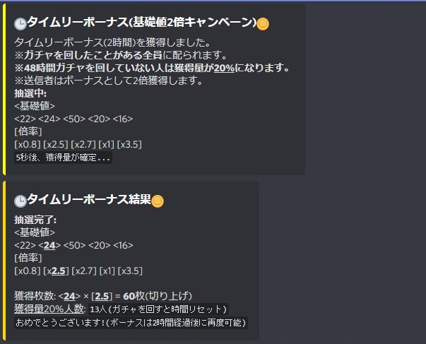

| [読むにあたっての注意] |
|---|
| [通常機能] |
| [_cdコマンド集] |
| [チートコマンド] |
| 表記 | 括弧名 | 説明 |
|---|---|---|
| <> | 山括弧(やまかっこ) | 括弧内に従って '必ず' コマンドを入力してください。 |
| [] | 角括弧(かくかっこ), 大括弧(だいかっこ) | 括弧内に従って '任意で' コマンドを入力してください。 |
| 「」 | 鉤括弧(がきかっこ) | 主に記述例にて示すべき部分を表します。(ほぼ無視して良い) |
| 五十音順 |
|---|
| ボットメンション |
| ダイス |
| 五十音順 |
|---|
| グルメス〇イザー |
| 効果音こんにちは |
・ボットメンション | |
|---|---|
| 機能 | ボットをメンションすると様々な反応を返します。(現在4つ登録済み) |
| 記述 | 「<@メンション> [整数]」('整数'に数値を入れると狙った反応を返させることが出来ます。1~4) |
| 例 | 「@Calculation&Diceroll bot」=> (何らかの反応を返す) |
・ダイス | |
|---|---|
| 機能 | アルファベット「d」を任意の数字で挟むことでダイスを振ることが出来る。振った結果の合計値を返す。 |
| 記述 | 「<振る回数整数)>d<面数(整数)>」 |
| 例 | 「2d10」 => (10面ダイスを2回振った時の合計値を返す) |
| <注意> | ※一度に1億回までしかダイスを振れません。 |
おまけ:グルメス〇イザー | |
|---|---|
| 機能 | 「グルメスパイザー」とチャットすることでグルメスパイザーを呼び出すことが出来る。(?) |
| 記述 | 「グルメスパイザー」 |
| 例 | 「グルメスパイザー」 => (グルメスパイザー発動) |
| (補足) | ボイスチャンネルに入った状態でチャットすると...? |
おまけ:効果音こんにちは | |
|---|---|
| 機能 | 「効果音こんにちは」とチャットすることでHIK〇KINさんばりに大量の効果音でこんにちはを呼び出すことが出来る。(?) |
| 記述 | 「効果音こんにちは」 |
| 例 | 「効果音こんにちは」 => (効果音こんにちは発動) |
| (補足) | ボイスチャンネルに入った状態でチャットしてください。 |
| 五十音順 | アルファベット順 |
|---|---|
| 一斉ボイスミュート | c |
| ガチャ | gacha |
| ギャンブル | gamble |
| くじ引き | help |
| 計算 | hrgen |
| ひらがま生成機 | lottery |
| プリセンス | mute |
| ヘルプ | presence |
| リア爆 | riabaku |
計算 | |
|---|---|
「_cd c ...」 | |
| 機能 | 式を打ち込むことで計算することが出来る。 |
| 記述 | 「_cd c <計算式>」 |
| 例 | 「_cd c 1+2 * 3」 => (7をチャットで返す) |
| (補足) | ダイスロール機能と組み合わせて計算することも可能 (例:「_cd c 1d10 * 5 + 10」 => (10面ダイスを1回振った合計×5に10加えた計算をする)) 関連:・ダイス |
| (補足2) | Javascriptの演算をそのまま利用しているのでMathオブジェクトなども利用することが出来ます。 ---Javascript Mathオブジェクトリファレンスに飛びます--- |
おまけガチャ | ||||||||||||||||
|---|---|---|---|---|---|---|---|---|---|---|---|---|---|---|---|---|
「_cd gacha ...」 | ||||||||||||||||
| 機能 | ガチャ(暇つぶし)を引くことが出来る。ガチャコインのデータを作成することが出来る。 | |||||||||||||||
| 記述 |
_cd gacha ...
|
|||||||||||||||
| 例 | 「_cd gacha」 => (1回ガチャを引き、コインデータがない場合はコインデータを作成する。) | |||||||||||||||
| 補足 詳細説明 |
・タイムリーボーナスは数時間間隔で配られるガチャコインイベントです。 ・時間経過後にガチャを回すとタイムリーボーナスが適用され、専用の抽選によって配当を決定します。 ・タイムリーボーナスはガチャを1回以上回していてコインデータがあるプレイヤー全員に配られます。 その際、タイムリーボーナスを行ったプレイヤーは配当が2倍になります。 ・ガチャを一定時間(48時間程度)回さないと受け取れるボーナス量が20%に減少します。 <イメージ>  ・リザーブコインはボットオーナー(運営者)がガチャラインアップ変更時等に設定します。 リザーブコインが設定されると各々のプレイヤーは次の条件にしたがってコイン・リザーブコイン枚数が変動します。 ※設定枚数500枚のとき
・リザーブコインは普通のコインのように使用は出来ません。 ただし次の条件に従ってタイムリーボーナスが配られた際に一定の枚数(100枚前後)のリザーブコインがコインなります。
| |||||||||||||||
投票ギャンブル | |||||||||||||||||||
|---|---|---|---|---|---|---|---|---|---|---|---|---|---|---|---|---|---|---|---|
「_cd gamble ...」,「_cd gam ...」 | |||||||||||||||||||
| 機能 | ガチャコインを使用し、投票制ギャンブルを行うことが出来る。 | ||||||||||||||||||
| 記述 |
_cd gamble ... (「_cd gam ...」)
| ||||||||||||||||||
| 例 |
⓵「_cd gamble bet 4649 1 100」 => (パスコード:4649の準備中セッションの1番に100コインベットする。) ⓶「_cd gamble open 誰が勝つ？ Aさん Bさん」 => (タイトル:誰が勝つ？で選択肢: Aさん, Bさんのセッションを作成します。) ⓷「_cd gamble start」 => (自身の準備中セッションを開始(ベット締め切り)します。) ⓸「_cd gamble end Aさん」 => (自身のプレイ中セッションの当選を「Aさん」にしてセッションを終了します。) | ||||||||||||||||||
| 補足 詳細説明 |
・このパスコードは0~9999で生成され、セッションを識別して選択するために使われます。◆ギャンブルの仕組みについて実際の配当確定までの過程はこちら...
1. ベット合計を当選した番号にベットした人に分配します。 | ||||||||||||||||||
| 掛け金合計 | 各番での掛け金合計 | -ベット内訳- |
|---|---|---|
| 1000枚 | ||
| No.1: 400枚 (2.5倍) | (今回は関係ないので省略)... | |
| No.2: 100枚 (10倍) | Aさん: 35枚, Bさん: 35枚, Cさん: 30枚 | |
| No.3: 500枚 (2.0倍) | (今回は関係ないので省略)... |
| 当選者 | 計算式 |
|---|---|
| Aさん | 350枚 = 1000 * (35 /100) |
| Bさん | 350枚 = 1000 * (35 /100) |
| Cさん | 400枚 = 1000 * (40 /100) |
ヘルプ | |
|---|---|
「_cd help」 | |
| 機能 | 説明書が書かれたURLがチャンネルに貼られる。 |
| 記述 | 「_cd help」 |
| 例 | 「_cd help」 => (このページのURLが貼られる) |
ひらがな言葉ジェネレータ― | |
|---|---|
「_cd hrgen ...」 | |
| 機能 | 完全ランダムで指定した文字数のワードを生成する。 |
| 記述 | 「_cd hrgen <数字>」 |
| 例 | |
| 「_cd hrgen 8」 => (ランダムなひらがな8文字を繋げたワードをチャットします) | |
| (補足) | ランダムで選ばれる平仮名は、・五十音 ・濁音半濁音 ・ー(ハイフン) ・「っ」 |
くじ引き | ||||||||||||
|---|---|---|---|---|---|---|---|---|---|---|---|---|
「_cd lottery ...」,「_cd lot ...」 | ||||||||||||
| 機能 | サーバー内で好きなようにくじを作り引くことが出来る。 | |||||||||||
| 記述 |
_cd lottery ...
|
|||||||||||
| 例 | 「_cd lottery join」 => (自身のチャンネルニックネームでくじに参加) | |||||||||||
| (補足) | 短縮して入力できる。(「_cd lot ...」) | |||||||||||
一斉ボイスミュート(便利)(サーバー管理者権限限定) | |
|---|---|
「_cd mute」,「_cd unmute」 | |
| 機能 | 自分の参加しているボイスチャンネルのメンバー全員を同時にサーバーミュートさせる。 (※ボットと普通のミュートしているメンバー除く) |
| 記述 | 「_cd mute」,「_cd unmute」 |
| 例 | |
| ⓵「_cd mute」,「_cd mt」 => (一斉ミュート) | |
| ⓶「_cd unmute」,「_cd umt」 => (一斉ミュート解除) | |
| (補足) | 例にある通り、短縮形がある。(_cd mt,_cd umt) サーバー管理者権限を持つ人のみ使用可能にしました。(2021/04/17) |
ピン！ポン！(ボット応答速度確認) | |
|---|---|
「_cd ping」 | |
| 機能 | 「Pong!」とチャットで返し、ボット応答速度(参考値)を返します。 |
| 記述 | 「_cd ping」 |
| 例 | |
| 「_cd ping」 => (「Pong!」と応答速度をチャットで返す) | |
プリセンス(アクティビティ) | |
|---|---|
「_cd presence」 | |
| 機能 | ボットのプリセンス(表示する情報)のモードを変更することが出来る。 |
| 記述 | 「_cd presence」 |
| 例 | |
| 「_cd presence」 => (プリセンスモード変更) | |
| モード | |
| ⓵デフォルトモード(案内1/案内2/タイムリーメーター) | |
| ⓶タイムリー監視モード(タイムリーメーターのみ) | |
| (補足) | 6秒単位で情報は更新される。(モードによっては同じ情報が更新されることがある。) |
リア爆 | |
|---|---|
「_cd riabaku ...」 | |
| 機能 | 一定の確率でリア充を爆破(爆発)することが出来る。 |
| 記述 | 「_cd riabaku [分子or分母] [分母]」 |
| 例 | |
| ⓵「_cd riabaku」 => (1/10000の確率で爆破させる) | |
| ⓶「_cd riabaku [分母]」 => (1/[分母]の確率で爆破させる) | |
| ⓷「_cd riabaku [分子] [分母]」 => ([分子]/[分母]の確率を成功させれば爆破) | |
| (補足) | ダイスロール機能とほとんど変わらn(ry 関連:・ダイス |
| 五十音順 | アルファベット順 |
|---|---|
| ガチャ(チート) | _cd gacha ... |
ガチャ(チート) | |||||||||||||||||||||||
|---|---|---|---|---|---|---|---|---|---|---|---|---|---|---|---|---|---|---|---|---|---|---|---|
「_cd gacha ...」 | |||||||||||||||||||||||
| 権限 | ・ボットオーナー ・開発者 | ||||||||||||||||||||||
| 記述 |
_cd gacha ...
|
||||||||||||||||||||||